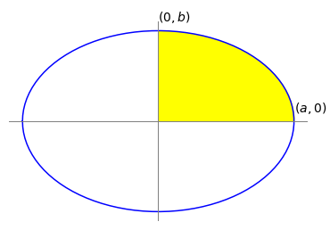

6 Using parametric equations¶
# import all python add-ons etc that will be needed later on
%matplotlib inline
import numpy as np
import matplotlib.pyplot as plt
from sympy import *
init_printing() # allows printing of SymPy results in typeset maths format
plt.rcParams.update({'font.size': 16}) # set font size for plots
Parametric equations are used because many complex equations do not simplify to something that can be readily integrated and it is simply easier to use the parametric form.
Complex curves are often given as a pair of parametric equations. The ellipse \(\displaystyle \frac{x^2}{a^2} + \frac{y^2}{b^2} = 1\) , for instance, is represented also as the pair of equations in the parametric variable \(t\) as
The constants \(a\) and \(b\) are the semi-major and minor axes of the ellipse. A circle has the similar equation with radius \(a = b\). To plot the parametric equations, \(t\) is varied and points at { \(x,\, y\) } plotted. How large \(t\) has to be to complete the curve depends on how \(t\) and \(x\) and \(y\) are related and has to be tested before plotting.
In parametric form an integral is always written in the following from
where \(x(t)\) and \(y(t)\) are the parametric equations. Since the variable is \(t\), not only is it necessary to convert \(dx\) into \(dt\) using \((dx/dt)dt\), but also to convert the integral’s limits \(\alpha\) and \(\beta\). If these are not defined in terms of \(t\) but as \(x_\alpha\) and \(x_\beta\), it is a little more complicated and it is necessary to define \(x_\alpha = f_x(\alpha)\) and \(x_\beta = f_x(\beta)\) where \(f_x\) is the \(x\) parametric function and both these equations will have to be solved to find \(\alpha\) and \(\beta\).
To make this clearer, a comparison is made between calculating the area under the first quadrant of the ellipse from coordinate (0, \(b\)) to (\(a\), 0) in the conventional way and in the parametric way. In the conventional way
Using Sympy gives the answer \(A=\pi a b/4\). One might surmise that the total area is \(\pi ab/4\) by analogy with a quadrant or one quarter the area of a circle.
a,b,x = symbols('a,b,x', positive=True)
eq= b*sqrt(1-x**2/a**2)
ans=integrate(eq,(x,0,a))
ans
In parametric form, equation (17) become
and the new limits \(\alpha\) and \(\beta\) must be determined. The integral can be performed by converting the sine to its exponential form first, which makes it much easier, see Section 2.7. The new limits \(\alpha\) and \(\beta\) are found using \(x_1 =0\) and \(x_2 =a\) with \(x_1 =a\cos(\alpha)\) and \(x_2 = a\cos(\beta)\). If \(x_1 =0\),then \(\cos(\beta)=0\) making the limit \(\beta=\pi/2\). When \(x_2 =a\), \(t=0\) because \(\cos(0) = 1\) making \(\alpha = 0\). Using the result of Section 2.7 to do the integration gives

Figure 9. The area of the quadrant is \(\pi ab/4\).
7 Plane polar coordinates¶
Sometimes equations are simpler and calculations easier when not done in Cartesian (rectilinear) coordinates but in polar or one of several other coordinate systems. Using Cartesian coordinates to integrate closed curves, such as circles or cardioids and so forth, can also lead to some pitfalls. The equation of a circle of radius 1 and centred at the origin \((0, 0)\) is \(x^2 + y^2 = 1\). When integrated, because exactly half the area is above the x-axis, this part should have a positive area and the half below a negative one making the total zero, whereas the area is clearly \(\pi\). Rearranging to find \(y\) and integrating gives \(\int_{-1}^{1}\sqrt{1-x^2}dx=\pi/2\) and although the integration was across the diameter \(x = -1\) to \(1\), only half of the area has been evaluated. This is because, by convention, only the positive part of the square root was used, and although it appears that we have integrated over the whole area in fact only half of the area has been covered. If \(-\int_{-1}^{1}\sqrt{1-x^2}dx\) is added to account for the other half, the result is zero. The area of the cardioid shown in Fig. 11 would similarly be zero because there is as much negative area below the x-axis as there is positive above it. A common way round this problem of false zero areas is to identify a symmetrical curve, calculate part of it and multiply the result according to symmetry, to obtain the whole area.
Two-dimensional curves represented in plane polar coordinates (\(r, \,\theta\) have coordinates that are the radius \(r\), the distance from the origin called the pole, to a point on the curve at an angle \(\theta\), and this angle is conventionally measured anticlockwise upwards from the horizontal. The pole is at \(r = 0\) and the horizontal \(\theta = 0\). A circle of radius \(a\) centred at the origin is \(x^2 + y^2 = a^2\) in Cartesian coordinates but \(r = a\) in plane polar coordinates.
Suppose that the origin of the coordinates lies on the circumference of a circle and the line \(\theta = 0\) passes horizontally through the circle’s centre, the equation \(r = 2a \cos(\theta)\) describes this circle, see Fig. 12.
The cardioid shown in Fig. 11 has the form \(r = a\left(1 + \cos(\theta)\right)\) and shows the definitions of r and θ. The equations to convert to plane polar coordinates from Cartesian ones are described in Chapter 1.6.1 and are
If a general curve described by some function of the angle is \(r = f(\theta)\), the area swept out by the radius in moving from the line \(\theta = \alpha\) to the line \(\theta = \beta\) is the area bounded by the curve and is
The integration limits are in the range \(0 < \alpha +\beta \le 2\pi\) and therefore cover the whole range of angles at maximum.
To derive this formula start with Fig. 10. At an angle \( \phi\) up from the horizontal, a sector is defined with a small angle \(\delta \theta\). The area of this small segment is \(A_{seg} = f(\phi)\lambda/2\) where \(\lambda\) is the length of the segment at radius \(r = f(\phi)\) on the curve \(r=f(\theta)\).
The arc length \(\lambda\) can be calculated using geometry because \(\delta \theta\) is so small that the triangle can be considered right-angled, hence \(\tan(\delta \theta) = \lambda/f(\phi)\). As \(\delta \theta\) is a small angle, \(\tan(\delta \theta) \approx \delta\theta\) making \(\lambda \approx f(\phi)\delta\theta\) and the area of the small segment is \(A_{seg} = f(\phi)^2\delta\theta/2\). If all these areas are added up and the limit \(\delta\theta \to 0\) taken, the integral 19 is produced.

Figure 10. Geometry to define the area swept out by radius arm \(r\).
To test equation 19, the area of a circle of radius \(a\), which has the polar equation \(r = a\), is \(\displaystyle A=\frac{a^2}{2}\int_0^{2\pi}d\theta =\pi a^2\) which is just as well, otherwise our method would be faulty! Notice that the integration is around the full circle.
Imagine in Figure 11 that the radius arm \(r\) extending from \(0 \to \alpha\) is moved anticlockwise to point \(\beta\), a movement that produces the segmental area between the pole and \(\alpha\) to \(\beta\). If \(\beta\) continues all the way round and back again to \(\alpha\) then the whole area is calculated. Two cases now have to be distinguished; the first when the pole is within the curve as shown on the right of Figure 11. The second is when the pole is outside the curve or on its circumference and these cases are dealt with next.


Figure 11a. Left: The cardioid \(r = a(1 + \cos(\theta))\) with \(a = 1\) drawn in polar coordinates but with
‘normal axes’ which are, however, not \(x\) and \(y\)
but in angle and showing only \(0\) and \(\pi/2\) radians.Figure 11b. The same cardoid as in 11a but with polar axes.
7.1 Limits when the pole is inside the curve¶
When the origin of the curve, i.e. the pole, is inside the curve, as it is in the peanut curve, integration is always from \(0 \to 2\pi\). Integrating around this curve, Figure 11, which has the polar equation \(r = 1/4 + \sin^2(\theta + \pi/4)\), is done with limits of \(0 \to 2\pi\) and its area is
The calculation can be done by changing the sine to exponential form and expanding the brackets. If you are not convinced of the simplicity produced by using polar coordinates, try doing this calculation in Cartesian coordinates by changing back using equation 18.
7.2 Limits when the pole is on the circumference or outside the curve¶
When the pole is on the curve itself or outside the curve, then the integration limits have to be calculated for each particular curve. The circle with its origin on the circumference, Figure 12, has the equation \(r = 2a\cos(\theta)\) and the area is
Notice that the limits are not \(0 \to 2\pi\) but \(-\pi/2 \to \pi/2\). Since the pole is not inside the curve, the angle the tangent makes with the horizontal at the pole, going clockwise and anticlockwise, must be calculated. This is done by making \(r = 0\) and solving the equations.
For this particular circle \(2a \cos(\theta) = 0\), and the angles forming the integration’s limits are therefore \(\pm \pi/2\) or \(\pm k\pi/2\) where \(k\) is one of the odd integers \(\cdots -3, -1, 1, 3 \cdots\) and so forth. This multiplicity is expected because the cosine function does repeatedly become zero. The limits to the integration are therefore \(-\pi/2\) and \(\pi/2\) when \(k = \pm 1\), which moves the radius arm only once around the curve during integration.


Figure 11c. Left: A ‘Peanut’, \(r = 1/4 + \sin^2(\theta + \pi/4)\). Figure 12. Right. Plot of \(r = 2 \cos(\theta)\). The angle the curve makes with the
horizontal or polar axis, at the pole (origin) is \(\pm \pi /2\).
Doing the same calculation for the cardioid, the integration limits are the angles that make \(1 + \cos(\theta) = 0\), which occur when \(\cos(\theta) = -1\) and is satisfied when \(\theta = \pm \pi\) and multiples thereof. Therefore, the angle is \(\pm k\pi\) and hence the limits are \(\pm \pi\). The total area of the cardioid is
As before the calculation is easier if the cosine is expressed as exponentials. Using Sympy the calculation gives
theta,a = symbols('theta,a')
eq = a**2/2*(1+cos(theta))**2
integrate(eq,(theta,-pi,pi))
The cardioid in Cartesian coordinates is the quartic \(\displaystyle (x^2+y^2-ax)^2-a^2(x^2+y^2)=0\) which would have to be solved to obtain \(y =\cdots\) before integration. Looking at this equation it is easy to appreciate how much simpler the polar equation is to integrate.
The general form of equation \(r = a + b \cos(\theta)\) is called a Limacon. The cardioid is so named after its heart shape and is, incidentally, the curve generated by a point on the circumference of a disc while rotating it without slipping around a similar disc. The moving disc performs two rotations in traversing the circumference of the inner one; you can try it with two similar coins.